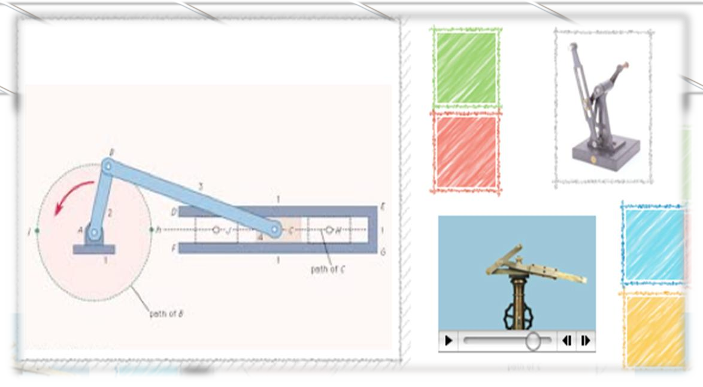

Assignment

Pre Test

Theory
Acceleration analysis of slider crank mechanism Theory
 Learning objectives
Learning objectives
After completing this simulation experiment one should be able to
-
Determine the linear acceleration of the piston of a reciprocating engine
or compressor at any given crank angle,for a given crank and connecting rod length
- Determine the angular acceleration of connecting rod
- Determine the normal and tangential acceleration any given link in the slider
crank mechanism
- Calculate the dynamic force at any given link cgat any given instance
- Explain the effect of ratio on different linkacceleration Basic theory is given under
The slider crank mechanism is one of the most useful mechanisms in modern technology since it appears in most of the
internal combustion engines including automobiles, trucks and small engines.The slider crank kinematic chain
consists of four bodies linked with three cylindrical joints and one sliding or prismatic joint.It is used to
change circular into reciprocating motion, or reciprocating into circular motion.
The arm may be a bent portion of the shaft, or a separate arm attached to it. Attached to the end of
the crank by a pivot is a rod, usually called a connecting rod. The end of the rod attached to the crank moves
in a circular motion, while the other end is usually constrained to move in a linear sliding motion, in and out.
Position Analysis

Figure 1 shows a slider
- crank mechanism in which the stroke
- line of the slider doesn’t pass through the axis of rotation of the crank. θ3 in clockwise direction from x
-axis is taken as negative Then,
$$d=\frac{-c_1\pm\sqrt{c_1^2-4c_2}}2$$
$$ \theta_3=\mathrm\pi+\overset{}{\sin^{-1}\left(\frac{\mathrm c-\mathrm{asin}\left({\mathrm\theta}_2\right)}{\mathrm b}\right)}$$
Where, $$c_1=-2ac\cos\left(\theta_3\right)$$
$$c_2=a^2-b^2+c^2-2ca\sin\left(\theta_2\right)$$
Velocity Analysis

Acceleration analysis of slider crank mechanism
Velocity Analysis
Let be the velocity of the slider, and ω3 be the angular velocity of the coupler link. Then,
from the data gleaned from the position analysis and the crank velocity, ω2, we have
$$\dot d=\frac{a\omega_2\sin\left(\theta_3-\theta_2\right)}{\cos\left(\theta_3\right)}$$
$$\omega_3=\frac{a\omega_2\cos\left(\theta_2\right)}{\cos\left(\theta_3\right)}$$
Acceleration Analysis

Differentiating the earlier equations from velocity analysis, we end up with the acceleration
data of the slider crank. With the prior knowledge of the angular acceleration of the crank, α
2,the parameters such as the linear acceleration of the slider,, and the angular acceleration of
the coupler, α3
$$\ddot d=\frac{a\alpha_2\sin\left(\theta_3-\theta_2\right)-a\omega_2^2\cos\left(\theta_3-\theta_2\right)-b\omega_3^2}{\cos\left(\theta_3\right)}$$
$$\alpha_3=\frac{a\alpha_2\cos\theta_2-a\omega_2^2\sin\theta_2-b\omega_3^2\sin\left(\theta_3\right)}{\cos\left(\theta_3\right)}$$
Inversions

Different mechanisms obtained by fixing different links of a kinematics chain are known as its inversions.A slider–crank chain has the following inversions:
-1. First inversion (i.e., Reciprocating engine and compressor)
2. Second inversion (i.e., Whitworth quick return mechanism and Rotary engine)
3. Third inversion (i.e., Oscillating cylinder engine and crank & slotted–lever mechanism)
4. Fourth inversion (Hand pump)
First Inversion
In this type of inversionCE is held fixed and A rotates around C along a circle and B slides back and forth along CE


This is the most common type of inversion. It is used in reciprocating engine and compressor.
Second Inversion
In this type of inversion ‘C’ and ‘A’ are both held fixed and the link CErotates in a circle
around C.The slider B slides back and forth along the rotating CE.

Second Inversion
In this type of inversion ‘C’ and ‘A’ are both held fixed and the link CE
rotates in a circle around C. The slider B slides back and forth along the rotating CE.
Figure6 : Second Inversion Whitworth Quick -Return Mechanism
In this inversion of the slider-crank the slider guide link is made to rotate. This is called a quick -return mechanism.
This linkage also converts rotary motion of the crank into oscillatory angular motion of the slider guide link.
This mechanism is used in shaper machine tools for cutting metals. Joseph Whitworth was a 19th century British
engineer and invento

Third Inversion

The oscillating cylinder engine is a form of a slider - crank mechanism. This mechanism is used often in door damper mechanisms. In the 19th century the oscillating cylinder was used on steam locomotives.
Fourth Inversion


Simulator

Procedure
Post Test

Review Questions
Reference
Photo Gallery